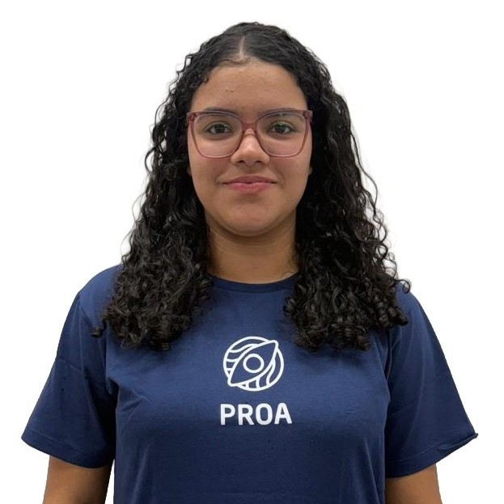

Prazer em Conhecer
Meu nome é Yasmin Victória Hartman Teixeira, tenho 17 anos e sou apaixonado por tecnologia, programação e inovação. Tenho explorado diferentes áreas da programação, incluindo desenvolvimento front-end, back-end e programação para Arduino, adquirindo experiência prática com HTML, CSS, JavaScript, C/C++, PHP e Kotlin. Atualmente, estou expandindo meus conhecimentos em desenvolvimento mobile full-stack e techlead, aprimorando minhas habilidades técnicas e analíticas para criar soluções criativas, eficientes e com propósito.
Baixar o meu CVMapa de Carreira
Engenharia da computação
Quero me aprofundar na área de Engenharia da Computação, buscando desenvolver as melhores competências técnicas e profissionais possíveis. Compreendendo de forma completa como a tecnologia funciona, desde o funcionamento interno de um computador até o desenvolvimento de sistemas e aplicações complexas. Quero dominar tanto a parte teórica quanto a prática, unindo a engenharia e a computação para criar soluções eficientes e inovadoras.
Soft Skills exigidas para essa carreira:
- Comunicação.
- Pensamento crítico e resolução de problemas.
- Curiosidade e aprendizado contínuo.
- Pensamento analítico e atenção aos detalhes.
Roadmap de Aprendizado:
- Python
- Java
- JavaScript
- C / C++
- PHP
- Go (Golang)
- SQL
Desenvolvedora de Software
Quero desenvolver a capacidade de pensar como uma Desenvolvedora de software, alguém que observa o problema, entende o contexto e busca a melhor forma de resolvê-lo com eficiência e empatia. Desejo contribuir com inovação, colaboração e propósito.
Soft Skills exigidas para essa carreira:
- Aprendizado contínuo.
- Empatia.
- Adaptabilidade.
- Proatividade.
Roadmap de Aprendizado:
- Python
- APIs REST
- SQL e NoSQL
- Debugging
- HTML/CSS
- Kanban
Desenvolvedora Junior
Eu quero me tornar uma desenvolvedora de software júnior e construir minha carreira criando soluções que realmente façam a diferença. Tenho muito interesse em aprender cada vez mais sobre programação, desenvolvimento web e tecnologia em geral. Quero dominar linguagens, entender a lógica por trás dos sistemas e transformar ideias em códigos funcionais e criativos.
Soft Skills exigidas para essa carreira:
- Autogestão.
- Inteligência emocional.
- Mentalidade de crescimento.
- Pensamento analítico.
Roadmap de Aprendizado:
- Frameworks Frontend
- Django
- PostgreSQL
- Python
Desenvolvedora Sênior
Quero trilhar uma trajetória até me tornar uma Desenvolvedora de Software Sênior, capaz de unir visão estratégica, domínio técnico e espírito de equipe. Meu objetivo é liderar projetos, apoiar colegas em seu desenvolvimento e continuar aprendendo sobre arquitetura de sistemas, segurança e novas tecnologias. Ser uma desenvolvedora sênior vai muito além do código envolve comunicação, empatia e a vontade de evoluir sempre.
Soft Skills exigidas para essa carreira:
- Mentoria e Liderança Técnica.
- Visão de Negócio.
- Autogestão e Maturidade Profissional.
- Relacionamento e Influência.
Roadmap de Aprendizado:
- TypeScript
- C#
- Node.js
- Kotlin
Soft e Hard Skills
Afinidade com as seguintes tecnologias e técnicas:
Frontend
-
HTML
-
CSS
-
JavaScript
Backend
-
PHP
-
Kotlin
-
Java
-
C#
-
MongoDB
Outras
- MySql
- Laço de repetição
- C
- MongoDB
- Linux
Idiomas
- Português (Nativo)
- Inglês (Técnico)